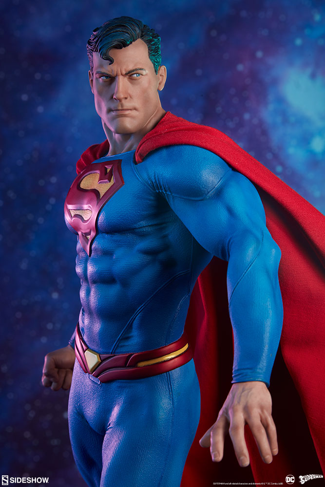

Most Vanilla Heroes in Pop Culture
As Black and White as this Site

Clark Kent: a Daily Bugle reporter
Also Known As...
Click for a list of known Aliases
- The Man of Steel
- Superman
- Supes
- Last Son of Krypton
- Smallville
- The Man of Tommorow
Most Controversial Moments
The Man of Steel
Plain Justice
Video evidence of his squareness
Clark Kent
“Truth, Justice, and the American way.”- Superman
“I think a hero is an rdinary individual who finds strength to preserve and endure in spite of overwhelming obstacles.”
- Christopher Reeve
“I believe in second chances, I believe in redemption, but, mostly, I believe in my friends.”
- Superman
“I once thought I could protect the world by myself. But I was wrong. Working together, we saved the planet. And I believe that if we stay together, as a team, we would be a force that could truly work for the ideals of peace and justice.”
- Superman
Why He's a Square
The following are actual tweets from Cory Booker's official account
- He has the most unoriginal and unimaginative superpowers ever
- He has too many superpowers
- Only a square would think that a combover is an acceptable disguise
- His overwhelming abilities allow him to avoid making difficult decisions
- He has been bland and generic in every portrayal
Heroic Achievements
Warning: This section contains spoilers for Man of Steel, Batman v Superman, and Justice League
Saved the Earth from General Zod
With Krypton destabilized from mining of the planet's core, Jor-El, chief advisor to Krypton's supreme council, recommends the council give him control of the genetics codex. Before any action can be taken, soldiers led by General Zod, an old friend of El's, launch an uprising and arrest the councilors. Realising that Krypton is doomed, El steals the genetic codex sought by Zod and infuses them into the DNA of his infant son, Kal-El—the first naturally born Kryptonian child in centuries. Donning his old armor, El sacrifices his life to allow his son to escape on a preprogrammed spacecraft. The council quashes Zod's rebellion, and its members are sentenced to exile in the Phantom Zone after being convicted of treason. Krypton explodes soon after.
Escaping the Phantom Zone, Zod and his crew intercept a transmission from the scout vessel and travel to Earth. Deducing that Kal-El is nearby, they broadcast a global address demanding that he surrender or risk war. Clark meets with the United States Air Force and agrees to comply, with Lois joining him as a hostage. Zod reveals that he possesses numerous terraforming devices, the largest called a World Engine, which he salvaged from Kryptonian outposts, which he intends to use to transform Earth into a new Krypton. His science officer, Jax-Ur, extracts Clark's genes to create Kryptonian colonists who will annihilate humanity and build a society based on Zod's ideals of genetic purity.
Using the Jor-El AI to take over the ship, Clark and Lois flee and warn the U.S. military after an explosive confrontation between Clark and Zod's troops in Smallville, just as Zod orders an invasion. Zod deploys the World Engine from the Kryptonian ship, which touches down in the Indian Ocean and begins firing a beam through the planet towards the ship, severely damaging Metropolis, and initiating the terraforming strategy. Given the codename "Superman", Clark destroys the terraforming platform while the military launches a suicide attack, sending Zod's troops back to the Phantom Zone. With the ship destroyed and Krypton's only hope of revival gone, Zod vows to destroy the Earth and its inhabitants just to spite Superman. The two Kryptonians engage in a lengthy battle across Metropolis, which concludes when Superman is forced to break Zod's neck as he attacks a family in a train station.
Befriended Batman and stopped Lex Luthor
To bring Superman out of exile, Luthor kidnaps Lois and Martha Kent, Clark's adoptive mother. Lex throws Lois off the LexCorp building, but Superman quickly saves her and goes on to confront Luthor, who reveals to Superman that he manipulated Superman and Batman against each other by fueling their mutual distrust. Luthor demands that Superman kill Batman in exchange for Martha's life. Superman tries to explain the situation to Batman, but instead Batman attacks Superman and eventually subdues him with the aid of a kryptonite gas. Before Batman can kill Superman with the spear, Superman urges Batman to "save Martha", whose name is also shared with Batman's mother, confusing him long enough for Lois to arrive and explain what Superman meant. Realizing how far he has fallen and unwilling to let an innocent die, Batman rescues Martha, while Superman confronts Luthor on the scout ship.
Luthor executes his backup plan, unleashing a genetically engineered monster with DNA from both Zod's body and his own blood.[N 3] Diana Prince arrives unexpectedly; revealing her metahuman nature, she joins forces with Batman and Superman to eliminate the creature. When they are all outmatched, Superman realizes its vulnerability to kryptonite, and retrieves the spear to kill it. After impaling it with the spear, in the creature's last moments, it kills Superman, having been weakened himself by exposure to kryptonite.
Cameback from the dead to save the Justice League
Clark Kent's body is exhumed and placed in the amniotic fluid of the genesis chamber of the Kryptonian scout ship alongside the Mother Box, which in turn activates after Flash uses his powers to charge it up and successfully resurrects Superman. However, Superman's memories have not returned, and he attacks the group after Stone accidentally launches a projectile at him. On the verge of being killed by Superman, Batman enacts his contingency plan: Lois Lane. Superman calms down and leaves with Lane to his family home in Smallville, where he reflects and his memories slowly come back. In the turmoil, the last Mother Box is left unguarded and Steppenwolf retrieves it with ease. Without Superman to aid them, the five heroes travel to a village in Russia where Steppenwolf aims to unite the Mother Boxes once again to remake Earth. The team fights their way through the Parademons to reach Steppenwolf, although they are unable to distract him enough for Stone to separate the Mother Boxes. Superman arrives and assists Allen in evacuating the city, as well as Stone in separating the Mother Boxes. The team defeats Steppenwolf, who, overcome with fear, is attacked by his own Parademons before they all teleport away.